Welcome
A scatterplot displays the relationship between two continuous variables. Scatterplots are one of the most common types of graphs—in fact, you’ve met scatterplots already in Visualization Basics.
In this tutorial, you’ll learn how to:
- Make new types of scatterplots with
geom_text()andgeom_jitter() - Add multiple layers of geoms to a plot
- Enhance scatterplots with
geom_smooth(),geom_rug(), andgeom_repel() - Change the coordinate system of a plot
The tutorial is adapted from R for Data Science by Hadley Wickham and Garrett Grolemund, published by O’Reilly Media, Inc., 2016, ISBN: 9781491910399. You can purchase the book at shop.oreilly.com.
The tutorial uses the ggplot2, ggrepel, and dplyr packages, which have been pre-loaded for your convenience.
Scatterplots
Review 1 - geom_point()
In Visualization Basics, you learned how to make a scatterplot with geom_point().
The code below summarises the mpg data set and begins to plot the results. Finish the plot with geom_point(). Put mean_cty on the \(x\) axis and mean_hwy on the \(y\) axis.
mpg %>%
group_by(class) %>%
summarise(mean_cty = mean(cty), mean_hwy = mean(hwy)) %>%
ggplot()mpg %>%
group_by(class) %>%
summarise(mean_cty = mean(cty), mean_hwy = mean(hwy)) %>%
ggplot() +
geom_point(mapping = aes(x = mean_cty, y = mean_hwy))"Good job! It can be tricky to remember when to use %>% and when to use +. Use %>% to add one complete step to a pipe of code. Use + to add one more line to a ggplot2 call."geom_text()
geom_text() and geom_label() create scatterplots that use words instead of points to display data. Each requires the extra aesthetic label, which you should map to a variable that contains text to display for each observation.
Convert the plot below from geom_point() to geom_text() and map the label aesthetic to the class variable. When you are finished convert the code to geom_label() and rerun the plot. Can you spot the difference?
mpg %>%
group_by(class) %>%
summarise(mean_cty = mean(cty), mean_hwy = mean(hwy)) %>%
ggplot() +
geom_point(mapping = aes(x = mean_cty, y = mean_hwy))mpg %>%
group_by(class) %>%
summarise(mean_cty = mean(cty), mean_hwy = mean(hwy)) %>%
ggplot() +
geom_text(mapping = aes(x = mean_cty, y = mean_hwy, label = class))
mpg %>%
group_by(class) %>%
summarise(mean_cty = mean(cty), mean_hwy = mean(hwy)) %>%
ggplot() +
geom_label(mapping = aes(x = mean_cty, y = mean_hwy, label = class))"Good job! geom_text() replaces each point with a piece of text supplied by the label aesthetic. geom_label replaces each point with a textbox. Notice that some pieces of text overlap each other, and others run off the page. We'll soon look at a way to fix this."geom_smooth()
In Visualization Basics, you met geom_smooth(), which provides a summarised version of a scatterplot.
geom_smooth() uses a model to fit a smoothed line to the data and then visualizes the results. By default, geom_smooth() fits a loess smooth to data sets with less than 1,000 observations, and a generalized additive model to data sets with more than 1,000 observations.
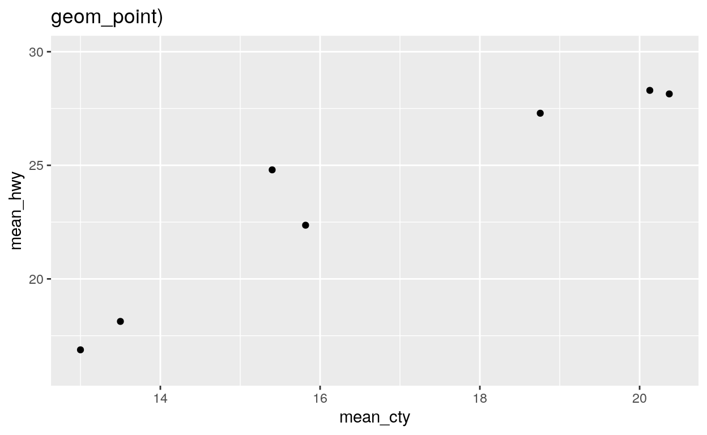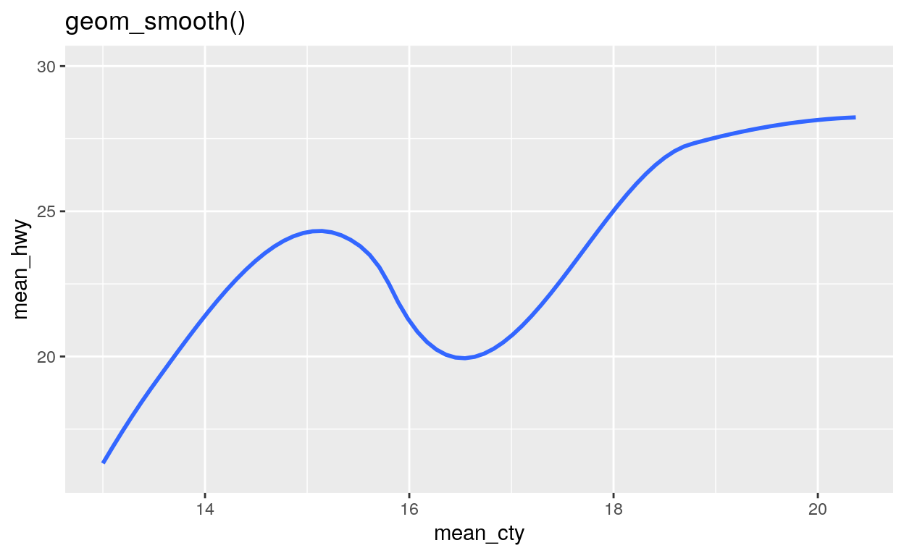
method
You can use the method parameter of geom_smooth() to fit and display other types of model lines. To do this, pass method the name of an R modeling function for geom_smooth() to use, such as lm (for linear models) or glm (for generalized linear models).
In the code below, use geom_smooth() to draw the linear model line that fits the data.
mpg %>%
group_by(class) %>%
summarise(mean_cty = mean(cty), mean_hwy = mean(hwy)) %>%
ggplot() mpg %>%
group_by(class) %>%
summarise(mean_cty = mean(cty), mean_hwy = mean(hwy)) %>%
ggplot() +
geom_smooth(mapping = aes(x = mean_cty, y = mean_hwy), method = lm)"Good job! Now let's look at a way to make geom_smooth() much more useful."Layers
Add a layer
geom_smooth() becomes much more useful when you combine it with geom_point() to create a scatterplot that contains both:
- raw data
- a trend line
In ggplot2, you can add multiple geoms to a plot by adding multiple geom functions to the plot call. For example, the code below creates a plot that contains both points and a smooth line. Imagine what the results will look like in your head, and then run the code to see if you are right.
mpg %>%
group_by(class) %>%
summarise(mean_cty = mean(cty), mean_hwy = mean(hwy)) %>%
ggplot() +
geom_point(mapping = aes(x = mean_cty, y = mean_hwy)) +
geom_smooth(mapping = aes(x = mean_cty, y = mean_hwy), method = lm) "Good job! You can add as many geom functions as you like to a plot; but, in practice, a plot will become hard to interpret if it contains more than two or three geoms."geom_label_repel()
Do you remember how the labels that we made early overlapped each other and ran off our graph? The geom_label_repel() geom from the ggrepel package mitigates these problems by using an algorithm to arrange labels within a plot. It works best in conjunction with a layer of points that displays the true location of each observation.
Use geom_label_repel() to add a new layer to our plot below. geom_label_repel() requires the same aesthetics as geom_label(): x, y, and label (here set to class).
mpg %>%
group_by(class) %>%
summarise(mean_cty = mean(cty), mean_hwy = mean(hwy)) %>%
ggplot() +
geom_point(mapping = aes(x = mean_cty, y = mean_hwy)) +
geom_smooth(mapping = aes(x = mean_cty, y = mean_hwy), method = lm)mpg %>%
group_by(class) %>%
summarise(mean_cty = mean(cty), mean_hwy = mean(hwy)) %>%
ggplot() +
geom_point(mapping = aes(x = mean_cty, y = mean_hwy)) +
geom_smooth(mapping = aes(x = mean_cty, y = mean_hwy), method = lm) +
geom_label_repel(mapping = aes(x = mean_cty, y = mean_hwy, label = class))"Good job! The ggrepel package also provides geom_text_repel(), which is an analog for geom_text()."Code duplication
If you study the solution for the previous exercise, you’ll notice a fair amount of duplication. We set the same aesthetic mappings in three different places.
mpg %>%
group_by(class) %>%
summarise(mean_cty = mean(cty), mean_hwy = mean(hwy)) %>%
ggplot() +
geom_point(mapping = aes(x = mean_cty, y = mean_hwy)) +
geom_smooth(mapping = aes(x = mean_cty, y = mean_hwy), method = lm) +
geom_label_repel(mapping = aes(x = mean_cty, y = mean_hwy, label = class))You should try to avoid duplication whenever you can in code because duplicated code invites typos, is hard to update, and takes longer than needed to write. Thankfully, ggplot2 provides a way to avoid duplication across multiple layers.
ggplot() mappings
You can set aesthetic mappings in two places within any ggplot2 call. You can set the mappings inside of a geom function, as we’ve been doing. Or you can set the mappings inside of the ggplot() function like below:
ggplot(data = mpg, mapping = aes(x = displ, y = hwy)) +
geom_point()
Global vs. Local mappings
ggplot2 will treat any mappings set in the ggplot() function as global mappings. Each layer in the plot will inherit and use these mappings.
ggplot2 will treat any mappings set in a geom function as local mappings. Only the local layer will use these mappings. The mappings will override the global mappings if the two conflict, or add to them if they do not.
This system creates an efficient way to write plot calls:
ggplot(data = mpg, mapping = aes(x = displ, y = hwy)) +
geom_point() +
geom_smooth(mapping = aes(color = class), se = FALSE)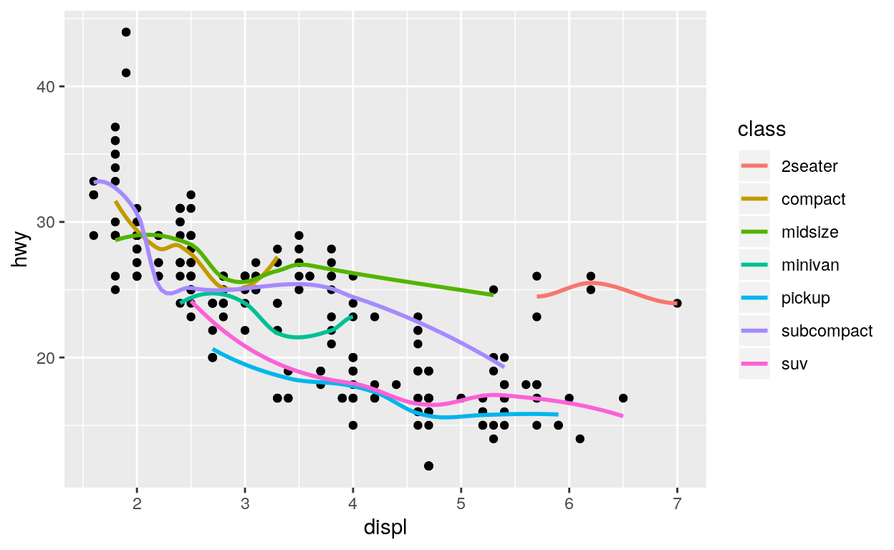
Exercise 2
Reduce duplication in the code below by moving as many local mappings into the global mappings as possible. Rerun the new code to ensure that it creates the same plot.
mpg %>%
group_by(class) %>%
summarise(mean_cty = mean(cty), mean_hwy = mean(hwy)) %>%
ggplot() +
geom_point(mapping = aes(x = mean_cty, y = mean_hwy)) +
geom_smooth(mapping = aes(x = mean_cty, y = mean_hwy), method = lm) +
geom_label_repel(mapping = aes(x = mean_cty, y = mean_hwy, label = class))mpg %>%
group_by(class) %>%
summarise(mean_cty = mean(cty), mean_hwy = mean(hwy)) %>%
ggplot(mapping = aes(x = mean_cty, y = mean_hwy)) +
geom_point() +
geom_smooth(method = lm) +
geom_label_repel(mapping = aes(label = class))"Good job! Remember that not every mapping should be a global mapping. Here, only geom_label_repel uses the label aesthetic. Hence, it should remain a local aesthetic to avoid unintended side effects, warnings, or errors."Exercise 3 - Global vs. Local
Recreate the plot below in the most efficient way possible.
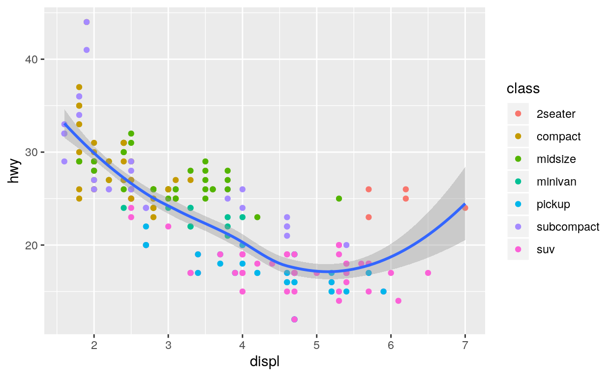
ggplot(data = mpg, mapping = aes(x = displ, y = hwy)) +
geom_point(mapping = aes(color = class)) +
geom_smooth()"Good Job!"Global vs. Local data
The data argument also follows a global vs. local system. If you set the data argument of a geom function, the geom will use the data you supply instead of the data contained in ggplot(). This is a convenient way to highlight groups of points.
Use data arguments to recreate the plot below. I’ve started the code for you.
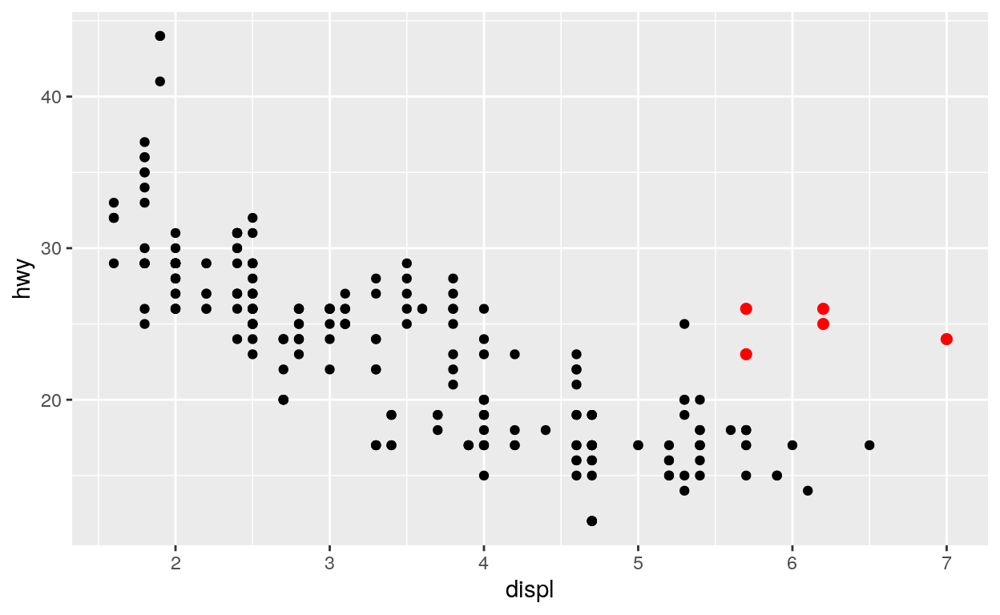
mpg2 <- filter(mpg, class == "2seater")mpg2 <- filter(mpg, class == "2seater")
ggplot(data = mpg, mapping = aes(x = displ, y = hwy)) +
geom_point() +
geom_point(data = mpg2, color = "red", size = 2)"Good Job!"Exercise 4 - Global vs. Local data
Use data arguments to recreate the plot below.
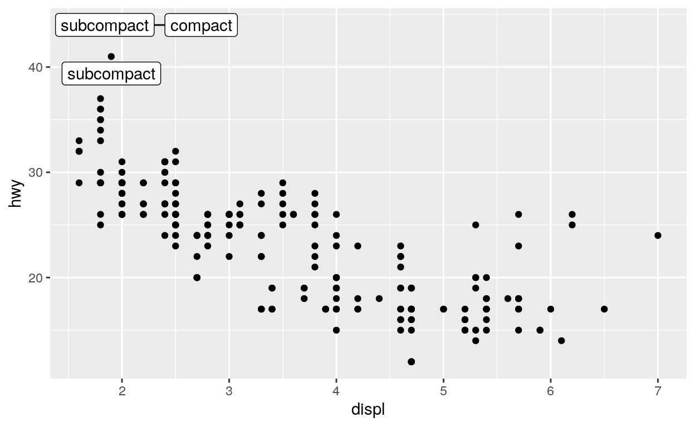
mpg3 <- filter(mpg, hwy > 40)
ggplot(data = mpg, mapping = aes(x = displ, y = hwy)) +
geom_point() +
geom_label_repel(data = mpg3, mapping = aes(label = class))"Good Job!"last_plot()
When exploring data, you’ll often make a plot and then think of a way to improve it. Instead of starting from scratch or copying and pasting your code, you can use ggplot2’s last_plot() function. last_plot() returns the most recent plot call, which makes it easy to build up a plot one layer at a time.
ggplot(data = mpg, mapping = aes(x = displ, y = hwy)) +
geom_point()
last_plot() +
geom_smooth()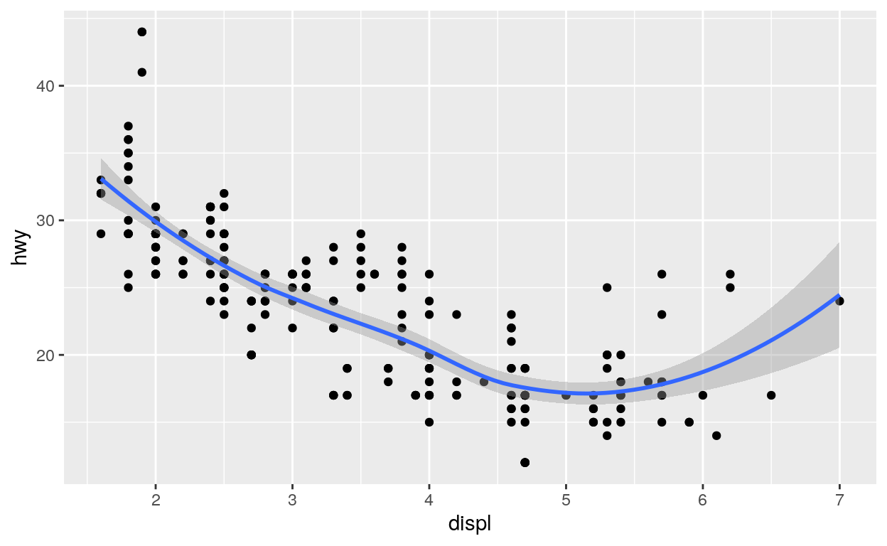
last_plot() +
geom_smooth(method = lm, color = "purple")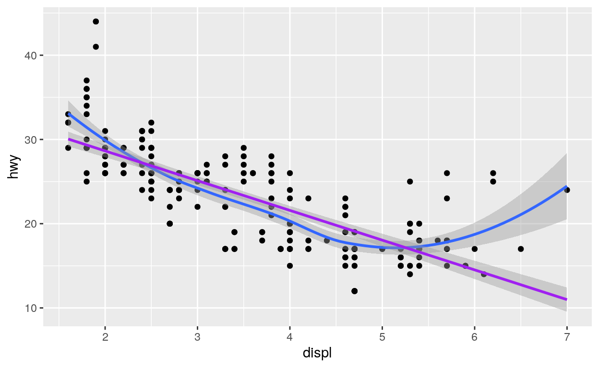
Saving plots
If you’d like to work with a plot later, you can save it to an R object. Later you can display the plot or add to it, as if you were using last_plot().
p <- ggplot(data = mpg) +
geom_point(mapping = aes(x = cty, y = hwy))Notice that ggplot2 will not display a plot when you save it. It waits until you call the saved object.
p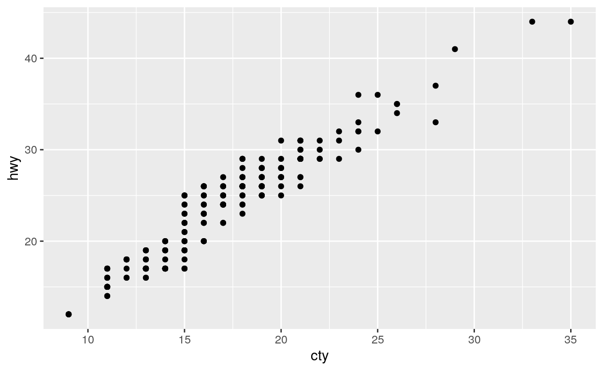
geom_rug()
geom_rug() adds another type of summary to a plot. It uses displays the one dimensional marginal distributions of each variable in the scatterplot. These appear as collections of tickmarks along the \(x\) and \(y\) axes.
In the chunk below, use the faithful dataset to create a scatterplot that has the waiting variable on the \(x\) axis and the eruptions variable on the \(y\) axis. Use geom_rug() to add a rug plot to the scatterplot. Like geom_point(), geom_rug() requires x and y aesthetic mappings.
ggplot(data = faithful, mapping = aes(x = waiting, y = eruptions)) +
geom_point() +
geom_rug()'Good job! Pass geom_rug() the parameter sides = "l" to limit the rug plot to just the left-hand axis (y) or sides = "b" to limit the rug plot to just the bottom axis (x).'geom_jitter()
geom_jitter() plots a scatterplot and then adds a small amount of random noise to each point in the plot. It is a shortcut for adding a “jitter” position adjustment to a points plot (i.e, geom_point(position = "jitter")).
Why would you use geom_jitter()? Jittering provides a simple way to inspect patterns that occur in heavily gridded or overlapping data. To see what I mean, replace geom_point() with geom_jitter() in the plot below.
ggplot(data = mpg) +
geom_point(mapping = aes(x = class, y = hwy))ggplot(data = mpg) +
geom_jitter(mapping = aes(x = class, y = hwy))"Good job! You can also jitter in only a single direction. To turn off jittering in the x direction set width = 0 in geom_jitter(). To turn off jittering in the y direction, set height = 0." jitter and boxplots
geom_jitter() provides a convenient way to overlay raw data on boxplots, which display summary information.
Use the chunk below to create a boxplot of the previous graph. Arrange for the outliers to have an alpha of 0, which will make them completely transparent. Then add a layer of points that are jittered in \(y\) direction, but not the \(x\) direction.
ggplot(data = mpg, mapping = aes(x = class, y = hwy)) +
geom_boxplot(outlier.alpha = 0) +
geom_jitter(width = 0)"Good job! If you like, you can make the boxplots more visible by setting the alpha parameter of geom_jitter() to a low number, e.g. geom_jitter(mapping = aes(x = class, y = hwy), width = 0, alpha = 0.5)"Coordinate Systems
coord_flip()
One way to customize a scatterplot is to plot it in a new coordinate system. ggplot2 provides several helper functions that change the coordinate system of a plot. You’ve already seen one of these in action in the boxplots tutorial: coord_flip() flips the \(x\) and \(y\) axes of a plot.
ggplot(data = mpg, mapping = aes(x = class, y = hwy)) +
geom_boxplot(outlier.alpha = 0) +
geom_jitter(width = 0) +
coord_flip()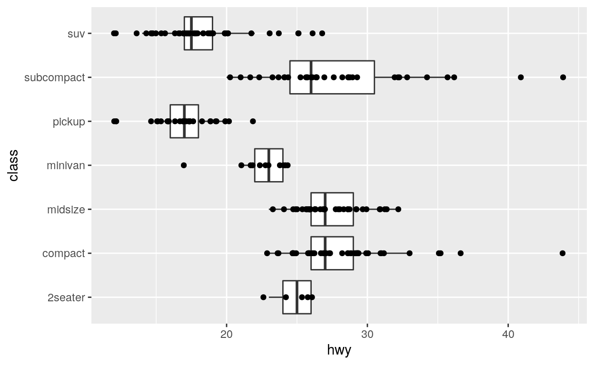
The coord functions
Altogether, ggplot2 comes with seven coord functions:
coord_cartesian()- (the default) Cartesian coordinatescoord_fixed()- Cartesian coordinates that maintain a fixed aspect ratio as the plot window is resizedcoord_flip()- Cartesian coordinates with x and y axes flippedcoord_map()andcoord_quickmap()- cartographic projections for plotting mapscoord_polar()- polar coordinatescoord_trans()- transformed Cartesian coordinates
By default, ggplot2 will draw a plot in Cartesian coordinates unless you add one of the functions above to the plot code.
coord_polar()
You use each coord function like you use coord_flip(), by adding it to a ggplot2 call.
So for example, you could add coord_polar() to a plot to make a graph that uses polar coordinates.
ggplot(data = diamonds) +
geom_bar(mapping = aes(x = cut, fill = cut), width = 1) 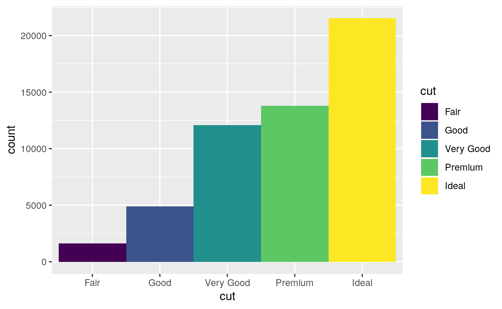
last_plot() +
coord_polar()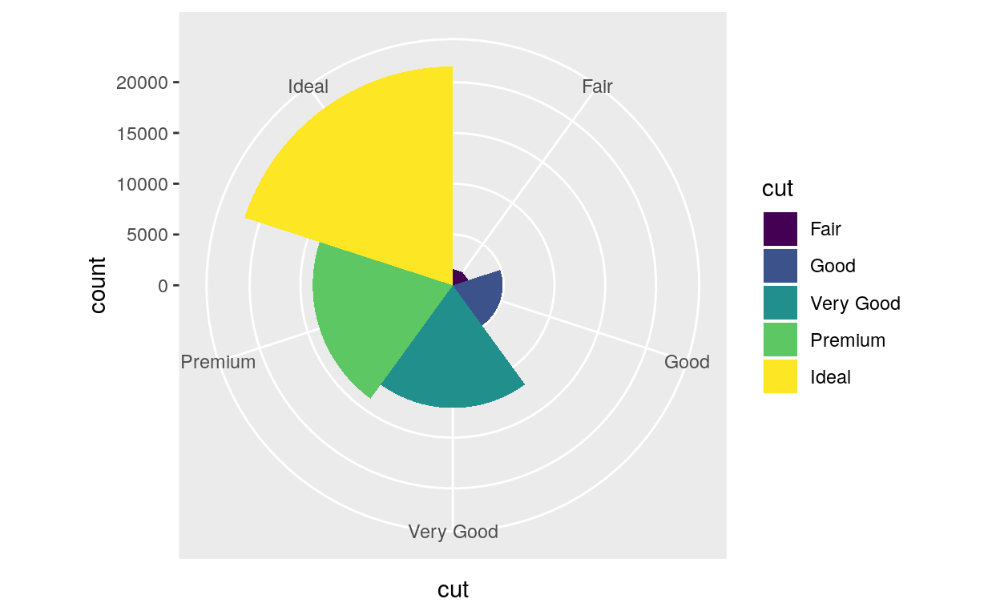
Coordinate systems and scatterplots
How can a coordinate system improve a scatterplot?
Consider, the scatterplot below. It shows a strong relationship between the carat size of a diamond and its price.
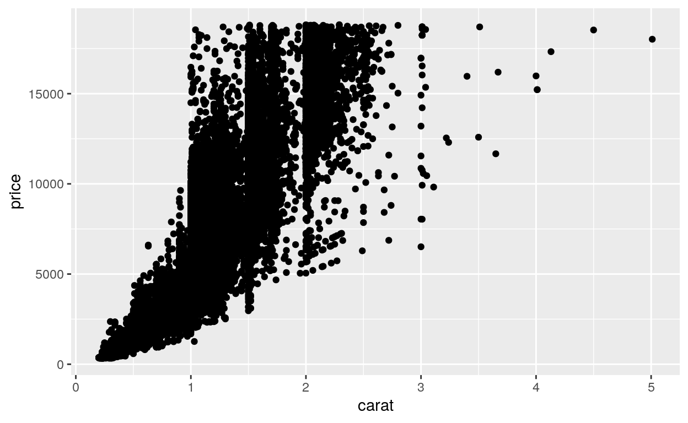
However, the relationship does not appear linear. It appears to have the form \(y = x^{n}\), a common relationship found in nature. You can estimate the \(n\) by replotting the data in a log-log plot.
log-log plots
Log-log plots graph the log of \(x\) vs. the log of \(y\), which has a valuable visual effect. If you log both sides of a relationship like
\[y = x^{n}\]
You get a linear relationship with slope \(n\):
\[log(y) = log(x^{n})\] \[log(y) = n \cdot log(x)\]
In other words, log-log plots unbend power relationships into straight lines. Moreover, they display \(n\) as the slope of the straight line, which is reasonably easy to estimate.
Try this by using the diamonds dataset to plot log(carat) against log(price).
ggplot(data = diamonds) +
geom_point(mapping = aes(x = log(carat), y = log(price))) "Good job! Now let's look at how you can do the same transformation, and others as well with a coord function."coord_trans()
coord_trans() provides a second way to do the same transformation, or similar transformations.
To use coord_trans() give it an \(x\) and/or a \(y\) argument. Set each to the name of an R function surrounded by quotation marks. coord_trans() will use the function to transform the specified axis before plotting the raw data.
ggplot(data = diamonds) +
geom_point(mapping = aes(x = carat, y = price)) +
coord_trans(x = "log", y = "log")Recap
Scatterplots are one of the most useful types of plots for data science. You will have many chances to use geom_point(), geom_smooth(), and geom_label_repel() in your day to day work.
However, this tutor introduced important two concepts that apply to more than just scatterplots:
- You can add multiple layers to any plot that you make with ggplot2
- You can add a different coordinate system to any plot that you make with ggplot2